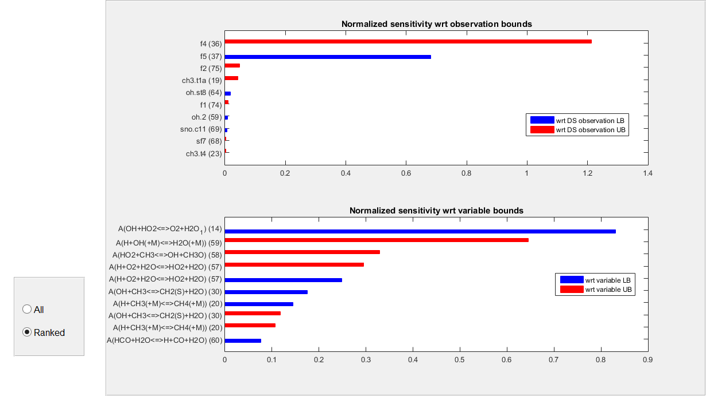
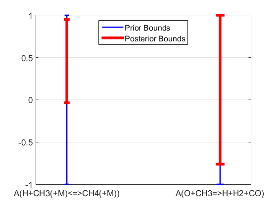
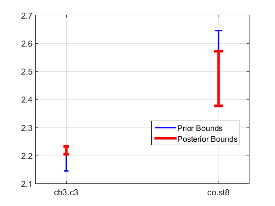
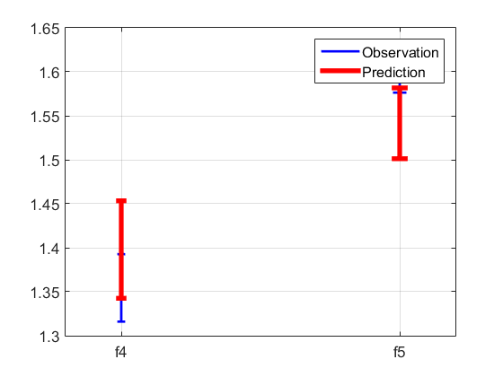
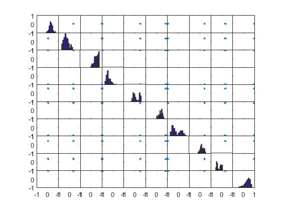

B2BDC example: Performing B2BDC analysis on a dataset
In this example, we demonstrate a B2BDC analysis, i.e. dataset consistency and prediction, on the GRI-Mech 3.0 dataset.
Contents
- Loading GRI-Mech 3.0 dataset
- Analyzing the consistency of a Dataset object
- Prediction on a consistent dataset
- Example: Posterior bounds on model variables
- Example: Posterior bounds on dataset QOIs (prediction)
- Example: Predicted bounds on unmeasured QOIs
- Example: Sampling the feasible set
- Example: Predicting eQOIs on sampled feasible points
- Attribution
format compact currentFolder = pwd; str = genpath([currentFolder '\GriExample']); addpath(str);
Loading GRI-Mech 3.0 dataset
The GRI-Mech 3.0 Dataset object dsGRI is constructed from an Excel spreadsheet and a MATLAB .mat file. For a detailed walkthrough of these steps, please refer to GRIMech_demo1.m.
[~,~,experimentData] = xlsread('GRIMech_expdata.xls'); s = load('GRIMech_modeldata.mat'); modelData = s.GRIMech_modeldata; dsGRI = generateDataset('GRI Mech 3.0'); dsGRI = addData(dsGRI,experimentData,modelData);
Analyzing the consistency of a Dataset object
A dataset is comprised of several dataset units, each of which contains:
- A surrogate model: on
- A set of observed bounds:
Note, the i-th unit is defined on a domain of active variables stored in a VariableList. E.g. the active variables of the first experimental quantity of interest (eQOI) can be found by dsGRI.DatasetUnits.Values(1).VariableList.
dsGRI.DatasetUnits.Values(1).VariableList
ans =
VariableList with properties:
Length: 10
Values: [1x10 B2BDC.B2Bvariables.ModelVariable]
By appropriately expanding and padding it's coefficient matrix with zeros, any surrogate model can be equivalently defined on the dataset's full VariableList(e.g. dsGRI.Variables). The complete VariableList for a dataset can be accessed as follows:
dsGRI.Variables
ans =
VariableList with properties:
Length: 102
Values: [1x102 B2BDC.B2Bvariables.ModelVariable]
A dataset is said to be consistent if there exists a vector of variables , indexed according to the full VariableList, such that each surrogate model evaluated at is in agreement with its corresponding observed bounds :
The consistency measure is defined as the solution of the following optimization problem.
If  , the bounds can be tightened and the dataset is consistent. If , the bounds must be relaxed and the dataset is therefore inconsistent. With quadratic and rational quadratic models, the computation of the consistency measure is NP-Hard. Oftentimes, however, we can efficiently develop tight bounds using convex relaxations and generalized solvers, i.e.
, the bounds can be tightened and the dataset is consistent. If , the bounds must be relaxed and the dataset is therefore inconsistent. With quadratic and rational quadratic models, the computation of the consistency measure is NP-Hard. Oftentimes, however, we can efficiently develop tight bounds using convex relaxations and generalized solvers, i.e.
,
Hence, a dataset is consistent if and inconsistent if  .
.
The method isConsistent brackets the consistency measure of a given dataset between upper and lower bounds. The following code evaluates the consistency of the dsGRI dataset.
dsGRI.isConsistent;
======================================================= Searching inner bound... ======================================================= ======================================================= Calculating outer bound... ======================================================= The calculation is done Consistency LB: -0.37248 Consistency UB: -0.30389 The dataset is inconsistent
As indicated by the negative upper bound, the dsGRI dataset is inconsistent. No configuration of variables exists that satisfies the models and the corresponding observations. In order to proceed with the analysis, the source of this inconsistency must be identified and fixed. Performing sensitivity analysis shows the relative impact that changing a variable or an observed bound would have on the consistency measure.
dsGRI.plotConsistencySensitivity
The consistency measure is most sensitive to eQOIs 36 and 37, suggesting that the corresponding observations may be suspect. Using the deleteUnit command, eQOIs 36 and 37 can be removed from the dataset. Here, we store the deleted eQOIs in a|datasetUnit| array named deletedUnits for later use.
deletedUnits = dsGRI.deleteUnit([36,37]);
With the above dataset units removed, dsGRI is consistent.
dsGRI.isConsistent
=======================================================
Searching inner bound...
=======================================================
=======================================================
Calculating outer bound...
=======================================================
The calculation is done
Consistency LB: 0.12642
Consistency UB: 0.23245
The dataset is consistent
ans =
1
Additionally, note that computing the consistency measure returns a feasible point, i.e. a vector of variables that satisfies all of the models and observations. This point can be accessed by dsGRI.FeasiblePoint. We can check if an arbitrary set of point is feasible by running the isFeasiblePoint command, which takes an nPoints-by-nVar matrix of points as an input, where nPoints number of points in the variable space to be checked and nVar is the number of variables/dimensionality of each point. isFeasiblePoint returns an nPoints-by-1 vector with elements of 0 (false, is not feasible) or 1 (true, is feasible).
xFeas = dsGRI.FeasiblePoint; dsGRI.isFeasiblePoint(xFeas')
ans =
1
Prediction on a consistent dataset
If a dataset is consistent, there exists at least one feasible point. We denote the feasible set as the collection of all such feasible points, i.e.
where is defined by the dataset's full VariableList and specifies our prior knowledge of the variables. The feasible set represents the updated state of knowledge after eQOI models and observations have been incorporated into the dataset. Note, any point belonging to the feasible set is an equivalent explanation of the eQOIs within their observed uncertainty.
By performing dataset prediction with B2BDC, i.e. minimizing and maximizing a prediction quantity of interest (pQOI) over the feasible set, one can establish a posterior range for the pQOI which includes both the prior information from as well as the information acquired from data (models and observations). The pQOI and prediction calculation can take many forms:
- Posterior bounds on j-th model variables ()
- Posterior bounds on the j-th measured QOI ( )
- Prediction bounds on an unmeasured QOI (
 )
)
In general, prediction corresponds to solving:
With quadratic and rational quadratic models, these optimizations cannot be solved exactly. Instead, we can efficiently bracket both optimization problems with inner and outer bounds. Taking just the outer bounds leads to a prediction range guarenteed to contain the true pQOI range.
Example: Posterior bounds on model variables
In this example, the posterior bounds for variables 20 and 33 of dsGRI are calculated using calVarBounds, which takes a nIndex-by-1 vector of variable indices, where nIndex is the number of indices, and a B2BDC.Option file as inputs and returns an nIndex-by-2 matrix. The j-th row of the returned array contains the lower bound approximiation of the posterior minimum followed by the upper bound approximation of the posterior maximum. Therefore, the true posterior range is guarenteed to be contained between these quantities.
Opt = generateOpt('Display',false); i1 = [20, 33]; %i1 = [1:nVars]; varBndsPosterior = dsGRI.calVarBounds(i1,Opt);
The prior on variables 20 and 33 can be extracted from the dsGRI VariableList. The function plotBounds takes inputs in the following order:
- prior bounds: an nIndex-by-2 array of lower and upper bounds
- posterior bounds: an nIndex-by-2 array of lower and upper bounds
- names: an nIndex-by-1 cell array of names
varBndsPrior = [dsGRI.Variables.Values(i1).LowerBound; dsGRI.Variables.Values(i1).UpperBound]';
varBndName = {dsGRI.Variables.Values(i1).Name};
figure;
plotBounds(varBndsPrior, varBndsPosterior, varBndName)
 Example: Posterior bounds on dataset QOIs (prediction)
In this example, the posterior bounds for eQOIs 15 and 30 are calculated using calQOIBounds, which takes a nIndex-by-1 vector of QOI indices and a B2BDC.Option file as inputs and returns an nIndex-by-2 matrix. Much as before, the j-th row of the returned array contains the lower bound approximiation of the posterior minimum followed by the upper bound approximation of the posterior maximum. The true posterior range is guarenteed to be contained between these quantities.
i2 = [15, 30]; %i2 = [1:nQOI]
qoiBndsPosterior = dsGRI.calQOIBounds(i2,Opt);
The method calBound returns an nQOI-by-2 array of lower bounds and upper bounds associated with the eQOIs of dsGRI. The plotBounds function is used again to display the posterior range improvement over the prior.
allqoiBnds = dsGRI.calBound;
qoiBndsPrior = allqoiBnds(i2,:);
qoiNames = {dsGRI.DatasetUnits.Values(i2).Name};
figure;
plotBounds(qoiBndsPrior, qoiBndsPosterior, qoiNames);
 Example: Predicted bounds on unmeasured QOIs
Recall, deletedUnits is the array of dataset units, which were removed earlier from the dataset dsGRI. The function predictQOI takes a Model object (surrogate model representing the pQOI) and a B2BDC.Option file as inputs and returns:
- A structure containing the outer and inner bounds for both the minimization and maximization of the pQOI.
- An nVar-by-2 matrix where each column is the vector of variables that corresponds to the inner bound calculation.
- A structure containing the sensitivities associated with both the minimization and maximization of the pQOI.
nUnits = length(deletedUnits); for i3 = 1:nUnits xi = deletedUnits(i3).SurrogateModel; [QOIRange, ~, QOISensitivity] = dsGRI.predictQOI(xi,Opt); delBndsPosterior(i3,:) = [QOIRange.min(1) QOIRange.max(2)]; end
The plotBounds function plots the observation bounds of pQOIs vs. their prediction ranges on the feasible set. Recall, the pQOIs in this example were removed from the dataset dsGRI as they caused inconsistency.
deletedBndsPrior = [deletedUnits.LowerBound; deletedUnits.UpperBound]';
deletedNames = {deletedUnits.Name};
figure;
plotBounds(deletedBndsPrior, delBndsPosterior, deletedNames);
legend('Observation','Prediction')
 Example: Sampling the feasible set
The collectSamples method takes a Dataset object and a specification on how many samples are desired as inputs and returns an nSamp-by-nVars matrix with feasible points as rows. See help plotmatrix for MATLAB's documentation on scatter plots of matrices.
nSamp = 1000; xVals = collectSamples(dsGRI,nSamp); figure; [h,ax]= plotmatrix(xVals(:,1:10)); [ax.XLim] = deal([-1,1]); [ax.YLim] = deal([-1,1]);
Example: Predicting eQOIs on sampled feasible points
The dataset eval method takes an nSamp-by-nVars matrix of points in the variable space and a vector of indices as inputs and returns an nSample-by-nIndex matrix where the (i,j)-th entry corresponds to the eQOI with j-th input index evaluated at the i-th point. In this section, we return the predicted values of QOIs 15 and 30 at the 1000 sampled feasible points.
i2 = [15, 30]; yPred = dsGRI.eval(xVals,i2);
Attribution
UC Berkeley, Spring 2016, B2BDC team